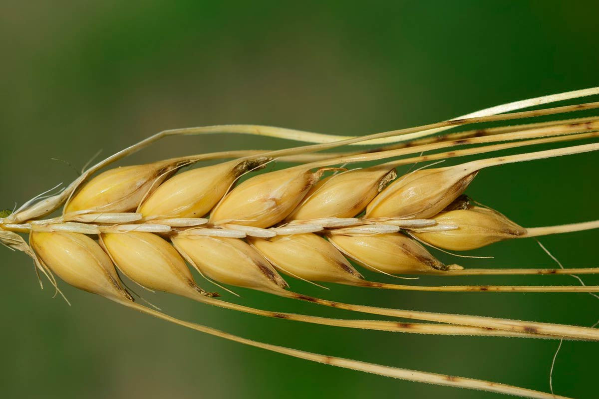

<ion-header>
  <ion-toolbar class="ion-text-center" color="secondary" mode="ios">
    <ion-title>Cebada</ion-title>
    <ion-buttons slot="start" mode="ios">
      <ion-back-button defaultHref="/tabs/home"></ion-back-button>
    </ion-buttons>
  </ion-toolbar>
</ion-header>

<ion-content color="light" class="ion-padding">
  <div class="container">
    <picture class="cebada_pic">
      
    </picture>
    <div class="cebada_desc">
      <ion-item color="light">
        <ion-label>Plagas</ion-label>
        <ion-select color="light" mode="ios" interface="action-sheet" placeholder="Select One">
          <ion-select-option *ngFor="let plaga of cebadaPlagas" [value]="plaga" (click)="verRecomendaciones(plaga)">{{plaga.nombre}}</ion-select-option>
        </ion-select>
      </ion-item>
    
      <ion-item color="light">
        <ion-label>Enfermedades</ion-label>
        <ion-select color="light" mode="ios" interface="action-sheet" placeholder="Select One" placeholder="Select One">
          <ion-select-option *ngFor="let enfermedad of cebadaEnfermedades" [value]="enfermedad" (click)="verRecomendaciones(enfermedad)">{{enfermedad.nombre}}</ion-select-option>   
        </ion-select>
      </ion-item>
          
      <ion-item color="light">
        <ion-label>Malezas</ion-label>
        <ion-select color="light" mode="ios" interface="action-sheet" placeholder="Select One" placeholder="Select One">
          <ion-select-option *ngFor="let maleza of cebadaMalezas" [value]="maleza" (click)="verRecomendaciones(maleza)">{{maleza.nombre}}</ion-select-option>
        </ion-select>
      </ion-item>
    </div>
  </div>

</ion-content>
